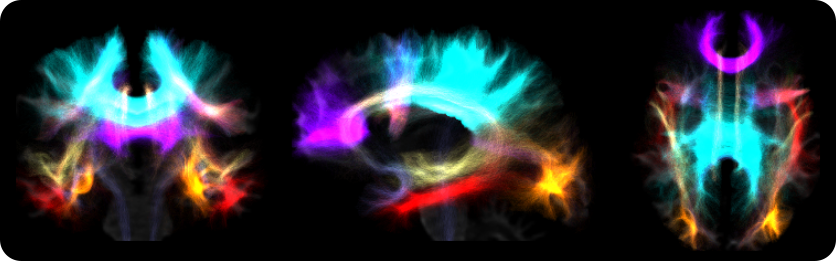

Automatic Bundle Segmentation
This section describes the integrated automatic virtual dissection of the main brain tracts based on auto_tracto. This tool was implemented using ANTs registration tools. The main purpose of the script 03_auto_tracts.sh is to split a tck tractogram into 35 white matter tracts, using already established automatic dissection protocols, which were manually tuned for optimal performance.
Derived from a full brain tractogram, 35 bundles are virtually dissected using the LANIREM protocols. The quality of the full brain tractogram will determine the quality of bundle separation. It is highly recommended to provide a tractogram with more than one million streamlines, and quality controlled for any errors. Strategies such as anatomically-contstrained tractography (ACT) and spherical deconvolution informed filtering of tractograms (SIFT), available in MRTrix3, should aid in obtaining such high-quality tractograms.
Non-linear (SyN) registration of the native FA map to the FA atlas (FMRIB58_FA_1mm)
Apply transformation to each bundle protocol to register them to the native FA space (DWI)
Verify stop criterion conditionals
Filter each white matter bundle according to the dissection protocols
There are two ways to run the automatic bundle segmentation. The first is integrated within the main script
mica-pipeunder the-SCmodule by adding a specific flag for this purpose, as shown in the following example:
mica-pipe -SC1mica-pipe \
2 -sub <subject> \
3 -ses <session> \
4 -out <outputDirectory> \
5 -bids <BIDS> \
6 -SC -autoTract \
7 -tracts 40M
Automatic bundle segmentation can also be performed using the stand alone script 03_auto_tracts.sh. Note that the stand alone script requires that all inputs are in DWI space.
103_auto_tracts.sh \
2 -tck sub-01_full_brain_tractogram.tck \
3 -outbase sub-01_tract \
4 -mask sub-01_binary_brain_mask.nii.gz \
5 -fa sub-01_FA_map.nii.gz \
6 -weights sub-01_full_brain_tractogram_weights.txt
Options |
Description |
|---|---|
|
Full path to full tractogram file tck (ideally SIFTED) |
|
Base name for all outputs |
|
Binary brain mask in the subject’s DWI space |
|
FA map in subject’s DWI space. This input is used for registration to the template |
Additional optional arguments can also be specified:
Optional argument |
Description |
|---|---|
|
If specific, the temporary directory will not be delted after processing is completed |
|
Specify location of temporary directory |
|
Streamlines are truncated if voxel contains less than this number of streamlines. Default is 1 |
|
This option to run a ROBUST registration, at the expense of more computation time |
|
Use this option if you calculated a weights file from SIFT2 |
|
Number of threads (Default is 6) |
|
Print software version |
Directories created by this script will be in the selected outbase.
The outputs generated by the micapipe integrated script are located in <outputDirectory>/micapipe/<sub>/dwi/auto_tract
dwi/auto_tract/
├── <sub>_space-dwi_desc-iFOD2-40M-SIFT2_AC.tck
├── <sub>_space-dwi_desc-iFOD2-40M-SIFT2_AF_L.tck
├── <sub>_space-dwi_desc-iFOD2-40M-SIFT2_AF_R.tck
├── <sub>_space-dwi_desc-iFOD2-40M-SIFT2_atlas2fa.nii.gz
├── <sub>_space-dwi_desc-iFOD2-40M-SIFT2_CC_MID.tck
├── <sub>_space-dwi_desc-iFOD2-40M-SIFT2_CGFP_L.tck
├── <sub>_space-dwi_desc-iFOD2-40M-SIFT2_CGFP_R.tck
├── <sub>_space-dwi_desc-iFOD2-40M-SIFT2_CGH_L.tck
├── <sub>_space-dwi_desc-iFOD2-40M-SIFT2_CGH_R.tck
├── <sub>_space-dwi_desc-iFOD2-40M-SIFT2_CG_L.tck
├── <sub>_space-dwi_desc-iFOD2-40M-SIFT2_CGR_L.tck
├── <sub>_space-dwi_desc-iFOD2-40M-SIFT2_CGR_R.tck
├── <sub>_space-dwi_desc-iFOD2-40M-SIFT2_CG_R.tck
├── <sub>_space-dwi_desc-iFOD2-40M-SIFT2_CST_L.tck
├── <sub>_space-dwi_desc-iFOD2-40M-SIFT2_CST_R.tck
├── <sub>_space-dwi_desc-iFOD2-40M-SIFT2_FA_L.tck
├── <sub>_space-dwi_desc-iFOD2-40M-SIFT2_FA_R.tck
├── <sub>_space-dwi_desc-iFOD2-40M-SIFT2_FMA.tck
├── <sub>_space-dwi_desc-iFOD2-40M-SIFT2_FMI.tck
├── <sub>_space-dwi_desc-iFOD2-40M-SIFT2_FX_L.tck
├── <sub>_space-dwi_desc-iFOD2-40M-SIFT2_FX_R.tck
├── <sub>_space-dwi_desc-iFOD2-40M-SIFT2_IFOF_L.tck
├── <sub>_space-dwi_desc-iFOD2-40M-SIFT2_IFOF_R.tck
├── <sub>_space-dwi_desc-iFOD2-40M-SIFT2_ILF_L.tck
├── <sub>_space-dwi_desc-iFOD2-40M-SIFT2_ILF_R.tck
├── <sub>_space-dwi_desc-iFOD2-40M-SIFT2_MLF_L.tck
├── <sub>_space-dwi_desc-iFOD2-40M-SIFT2_MLF_R.tck
├── <sub>_space-dwi_desc-iFOD2-40M-SIFT2_OR_L.tck
├── <sub>_space-dwi_desc-iFOD2-40M-SIFT2_OR_R.tck
├── <sub>_space-dwi_desc-iFOD2-40M-SIFT2_SLF_L.tck
├── <sub>_space-dwi_desc-iFOD2-40M-SIFT2_SLF_R.tck
├── <sub>_space-dwi_desc-iFOD2-40M-SIFT2_summary.txt
├── <sub>_space-dwi_desc-iFOD2-40M-SIFT2_TAPETUM.tck
├── <sub>_space-dwi_desc-iFOD2-40M-SIFT2_UF_L.tck
├── <sub>_space-dwi_desc-iFOD2-40M-SIFT2_UF_R.tck
├── <sub>_space-dwi_desc-iFOD2-40M-SIFT2_VOF_L.tck
└── <sub>_space-dwi_desc-iFOD2-40M-SIFT2_VOF_R.tck
The description (desc-) refers to the algorithm used to generate the tractogram (here, iFOD2), its number of streamlines (here, 40M) and the filtering algorithm (here, SIFT2).
List of names and their acronyms obtained with the integrated automatic virtual dissection of the main brain tracts based on auto_tracto:
Acronym
Tract name
AC
Anterior Commissure
AF
Arcuate Fasciculus
CC_MID
Corpus Callosum middle portion
CGFP
Cingulum, fronto-parietal portion
CGH
Cingulum, parahippocampal portion
CG
Cingulum, whole
CGR
Cingulum, rostral and subgenual
CST
Corticospinal tract
FA
Frontal aslant
FMA
Forceps major of corpus callosum
FMI
Forceps minor of corpus callosum
FX
Fornix
IFOF
Inferior fronto-occipital fasciculus
ILF
Inferior longitudinal fasciculus
MLF
Middle longitudinal fasciculus
OR
Optic radiation
SLF
Superior longitudinal fasciculus
UF
Uncinate fasciculus
VOF
Vertical occipital fasciculus